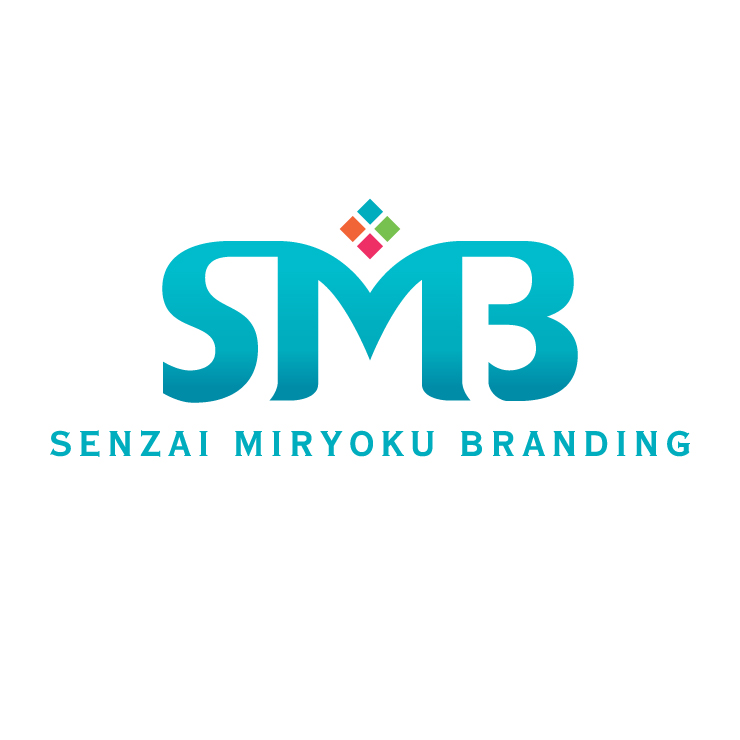

ファーストビュー
誰の何を変えるサービスなのかを、5秒以内で理解できるコピーとビジュアルにします。

SMBSENZAI MIRYOKU BRANDINGLanding page
ブランドの世界観を保ちながら、悩み、解決策、実績、申し込みまでを一本の流れで設計します。
誰の何を変えるサービスなのかを、5秒以内で理解できるコピーとビジュアルにします。
40代・50代の読者が抱える悩みを、軽すぎない言葉で丁寧に受け止めます。
内容、期間、成果、サポート範囲を見やすく整理し、納得して申し込める形へ。
無料相談、資料請求、説明会など、心理的ハードルに合わせた導線を配置します。
Conversion
LPの役割は煽ることではなく、読者が自分の課題に気づき、相談する理由を見つけることです。